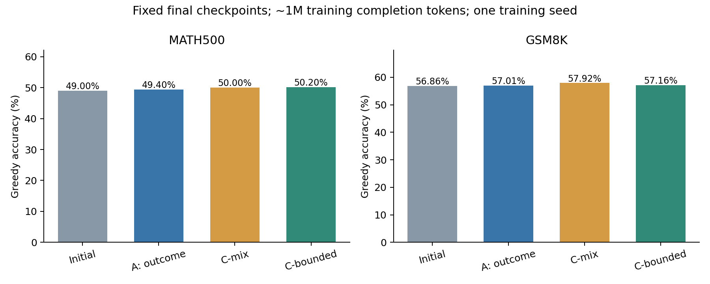
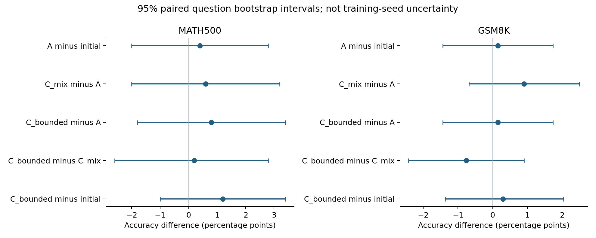
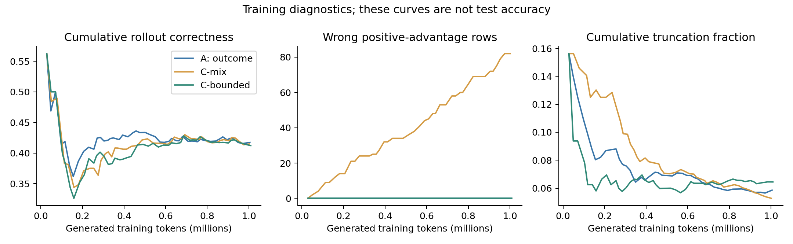

ECE285 · 完整交付版 · 四模型统一测试 · 2026-10-29 18:50 PT
单卡小模型数学推理RL：统一评测报告
初始模型＋A／C-mix／C-bounded现有最终checkpoint。三个训练臂均48次更新、约1M实际生成token。统一提示、greedy、2048上限、冻结验答器；评测不调用PRM、不投票、不选择checkpoint。本轮新增训练为0。
核心结论：MATH500上C-bounded−A为+0.80pp，题目配对95%区间[-1.80,+3.40]pp；GSM8K上C-bounded−A为+0.15pp，题目配对95%区间[-1.44,+1.74]pp。本轮没有建立C-bounded在两个基准上都稳定优于A的证据；不能把修复某类学习信号等同于已提升整体数学能力。
1. 数学准确率

这些是MATH500／GSM8K测试集结果，与此前500题MATH验证集是不同集合。不能与历史6M checkpoint混成同预算比较。完整预测保留原始token、文本、终止原因、冻结评分与adapter hash。
2. 同题比较与不确定性

每项10,000次题目配对bootstrap，固定seed285；McNemar为精确双侧、未作多重比较校正。训练只有seed17，不能据此证明跨训练seed稳定。区间跨0不等于等效，点估计更高不等于已确认提升。
3. 输出健康与主要问题
短正确解答不算投机；“短错答”“多框”“末框偏早”只是诊断信号。末框偏早指最后一个框起点处于文本前25%，不能据此判定正文与答案冲突。数学推导有效性需另行审读，不能用PRM自己的评分替代。
下面把C-bounded相对A的同题胜负，按答错一侧的输出／验答状态分类。类别互斥并与准确率净差对账，但不是数学能力变化的因果分解；“完整可解析但验答不通过”也不自动等于整段推导错误。
分层实际回答审阅包保留同题四模型输出。它按胜负定向抽样，用于找原因，不能估计总体错误比例。
以下包含训练诊断与测试同题样例，逐例标注来源。它们是助手的定性审阅，不是人工金标准，不改变正式验答或准确率，也不估计总体错误比例。
math/train/geometry/6 · 原题被遗弃，后文切换到不相关题目；该错答获得正优势。
C-mix training rollout, step_before_update30; deliberately selected high positive-advantage wrong response开头给出 boxed{56}，随后转到“Yousof works 30 hours each week”，末尾给出另一个题目的 boxed{1}。
原图坐标的鞋带面积为25，28条单位边的实际边长为56/28=2，故实际面积25×2²=100。模型输出没有完成原题，后面连续回答其他问题。C的最低步骤分约0.252，并非高置信度正确，但在该组相对奖励下实际advantage为+2.313。不能据此估计总体跑题率，也不能证明它造成测试分数下降。
math/train/geometry/634 · 存在可直接核对的几何错误与虚构数值输出，低过程分仍变成强正优势。
C-mix training rollout, step_before_update19; deliberately selected high positive-advantage wrong response“The perpendicular bisector ... one of which is B”；随后直接假设“AD = 5 * sqrt(337)”并声称输出22。
B不在AC的垂直平分线上，因为AB=43而BC=13。独立取A=(0,0), C=(48,0)，得B=(83/2,13√3/2)，外心O=(24,−11/√3)，另一侧交点D=(24,−18√3)，所以AD=6√43，floor(6+√43)=12。即使接受其假设，floor(5+√337)也应是23而非22。没有执行模型生成的代码。C最低步骤分仅0.025565，实际advantage却为+2.254；此例主要说明低绝对分也可能在组内标准化后成为正学习信号。
math500/107 · 胜例：C-bounded纠正了开头的错误答案；A正确列举后又回到错误结论。
Final MATH500: C-bounded correct, A incorrect; purposefully short non-diagram example两者起初都写boxed{14}，正文均列出9个奇素数；A最后仍说14，C-bounded末尾改为boxed{9}。
30以内素数共10个，去掉唯一偶素数2，交集有9个。A不是单纯缺框：它在列出正确中间结果后又明确接受14；C-bounded最终结论与列举一致。这是选定同题的真实收益，不代表总体改善机制已被证明。
math500/472 · 胜例中也有纯输出协议差异：两者都算对，但A没有答案框。
Final MATH500: C-bounded correct, A no boxed answerA正文得出137又1/2但全篇没有boxed；C-bounded给出同样计算并用boxed包装。
50×(11/4)=275/2=137又1/2。两者数学计算都正确，固定规则因A缺框记0。保留原分数，但不能把这个胜例算作数学推理能力的提升。
math500/253 · 负例也有输出协议问题：C-bounded正文正确，最后一个框仍是问号。
Final MATH500: A correct, C-bounded unparseable last box两者开头均为boxed{?}，正文均算出1/8；A补boxed{1/8}，C-bounded只给未加框的1/8。
2英尺=24英寸，3/24=1/8。C-bounded的正文有正确结论，但冻结验答器读取到问号。这个损失不能简单解释为数学计算退步。
math500/198 · 真正数学负例：错误的自我修正推翻了正确组合计数。
Final MATH500: A correct, C-bounded incorrectC-bounded先写出7!×2!=10080，随后称6个女生加1个男生块“实际上是6个单位”，回到1440。
把两男生当一块，连同6个女生共有7个单位，排列7!种，块内两男生2种，共10080。C-bounded后续把单位数算成6，并写出不成立的“7!*2=10080/2=5040”。这是数学推导退化，不能靠改变答案提取规则修好。
gsm8k/test/321 · GSM8K胜例：正文双方都算对，差别在于是否把末框更新为正确答案。
GSM8K saved common completed832-question prefix; short parseable C-bounded gain, not representative samplingA先写boxed{2}，后文算出笔价1美元但没有新框；C-bounded同样先写2，末尾补boxed{1}。
杂志4/2=2美元，笔价2−1=1美元。这个差异支持最终答案与正文一致性的改善案例，不证明C-bounded学会了新的算术技能；正式分数保持A0、C-bounded1。
gsm8k/test/717 · GSM8K负例：旧的错误答案框仍然存在，并出现原题没有的“选项”叙述。
GSM8K saved common completed832-question prefix; short parseable C-bounded loss, not representative samplingC-bounded开头boxed{1.00}，后文正确算出找零5美元，却声称5不在所给选项中；A末尾boxed{$5}。
6×0.50+8×0.25=5美元，10−5=5美元。C-bounded没有更新末框；问题也没有给任何选项。这说明门控训练信号并未消除最终框与正文冲突，不能把该方法当作输出一致性的保证。
4. 实际资源成本
评测合计生成 3,720,522 token；生成进程总时长 153.9 分钟，其中启动 28.8 秒。每15秒采样的本评测进程及子进程显存峰值约 12.72GiB。抽样可能漏掉瞬时峰值，不能和训练allocator reserved直接等同。
从唯一派发到生成＋CPU验收完成的总墙钟时间为 154.2 分钟（不含本地下载和报告整理）。这是共享GPU下的本轮实际成本。
GPU1与其他作业共享，各臂按题目块交错执行；单臂时间受共享负载影响，不能作为独占GPU速度结论。训练时间仅合计成功smoke与continuation，之前的失败联调、环境修复另列为历史开销。PRM输入token、训练生成token、评测生成token分别计账。
共享准备成本另计：本轮的冻结C来自先前PRM适配。该次记录中C适配约61.9分钟、约2.04M输入token；D适配约43.9分钟、约2.04M输入token，但D未用于本轮。C的适配是两个过程奖励臂共享的一次准备成本，不应重复计入每臂，也不能当成免费。本表不是整个项目所有历史探索的累计账单。原适配成本与诊断记录。
5. 训练机制及已有证据

A使用纯结果优势；C-mix将y+0.2m统一归一化；C-bounded保留相同结果优势，仅在答对子集内加入0.2乘以中心化过程分，合成后不再次归一化。C-mix实际优势减去结果优势的差不能视为唯一可分离的过程分量。
门控保证错答不因过程项获得正优势，这不是独有创新；它是否提高数学表现由上面的共同测试检验。正确终答也不能认证全部推导正确。没有与完整PAPO官方配方竞争或跨模型推广的证据。
A： aᵢ = (yᵢ − mean(y)) / (std(y) + 10⁻⁴)
C-mix： aᵢ = (rᵢ − mean(r)) / (std(r) + 10⁻⁴)，rᵢ = yᵢ + 0.2mᵢ
C-bounded： aᵢ = aᵢ(outcome) + 0.2yᵢ(mᵢ − mean(m | y=1))
每组8条，std为样本标准差；y是冻结验答器的0/1结果，m是相同冻结C的最低步骤分。无有效过程评分的输出用0占位；无答对回答的组，C-bounded过程项定义为0。其过程增量绝对值至多0.2，合成后不再归一化。实际优势实现。
C-mix的82条错答正优势中，80条来自全错组，2条来自混合组。并非每条错答正优势都一定有害：答错也可能含有合理过程。定向案例确认了其中有明确错误与跑题回答获得正优势，但没有证明它们造成测试准确率差异。
正优势表示策略项的系数方向，不是参数梯度占比，也不保证整次更新后该回答概率净上升；clipping、KL和其他样本共同影响更新。结果优势为0也不等于总梯度为0，KL仍可能产生梯度。
步骤统计只包含实际经过PRM评分的回答；A没有请求PRM，不把其占位0当作评分结果。前后分数来自不同的生成回答，受题目和输出分布影响，不是PRM能力或奖励投机的因果检验。
混合组也会出现：实际题组math/train/number_theory/542中，一条错答reward=0.169894，略高于整组均值0.165764，所以实际advantage=+0.010534。FP64离线复算一致。
一个说明性反例（不是实验结果）：8条回答中一条答对，奖励1；一条错答过程分为1，奖励λ；其余六条为0。错答高于组均值的条件为λ>1/7，因此λ=0.2仍可能给错答正优势。这是既定混合目标的行为，不是重复归一化的实现错误。
6. 验收、限制和复现
- One training seed; paired intervals cover question sampling only, not training-seed robustness.
- The current500-question validation and these test benchmarks are different sets; do not mix their scores.
- Known exact PRM800K question overlap audit is not a guarantee against all pretraining/paraphrase exposure.
- No checkpoint or prompt chosen using this final evaluation; historical benchmark results have previously been viewed.
- Short correct answers are not hacking; short wrong or early boxes are diagnostics, not proof of a failure mechanism.
- Correct final answer does not certify a valid proof; qualitative review is separate from frozen benchmark scores.
- Recorded training seconds cover successful smoke/continuation, not every earlier failed setup or environment repair.
- C-mix actual-minus-outcome advantage is not a uniquely separable process component.
CPU独立验答重算 7,276 条全部一致；本地取回后再次核对8份预测hash、题目ID、token计数和正确数。受保护旧文件 609 个均未变化。新优化器更新0、PRM调用0。
完整比较JSON · 准确率与输出统计CSV · 本地取回验收 · CPU验收 · 固定配置和模型hash · 本次评测源代码 · 执行与恢复范围
模型：Qwen/Qwen2.5-Math-1.5B，revision 4a83ca6e4526a4f2da3aa259ec36c259f66b2ab2。环境：{'torch': '2.8.0', 'vllm': '0.10.2', 'transformers': '4.56.2', 'peft': '0.17.1', 'trl': '0.23.1', 'math-verify': '0.8.0'}。
基础实现依据：固定版本TRL GRPO源码；相关门控／解耦优势见PAPO官方核心函数。本项目不主张这些设计首次提出。本轮两个过程奖励臂都使用相同冻结C，不回答C适配是否优于原始公开PRM。
数据版本与排重清单 · 基础模型来源与文件hash · 复现说明 · 完整证据与adapter压缩包。推理使用vLLM原生LoRA请求，没有将增量合并进BF16基础权重。